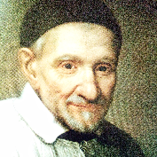

MILOSRDNÁ LÁSKA ZÍSKAVA SVET
SPOMIENKA NA PUTOVANIE RELIKVIÍ SVÄTÉHO VINCENTA DE PAUL
SLOVENSKO ∙ ČESKO (26. 9. 2019 - 15. 12. 2019)

PÚŤ RELIKVIÍ
PUTOVNÝ RELIKVIÁR
SV. VINCENT
DE PAUL
ZÁZRAKY
PÁNA VINCENTA
SV. LUJZA
DE MARILLAC
SV. KATARÍNA
LABOURÉ
SV. JUSTÍN
BL. MICHAL
SV. FRANTIŠEK
REGIS CLET
SV. JÁN GABRIEL
PERBOYRE
SV. ALŽBETA
SETTON
SV. JANA ANTIDA
THOURET
MUČENÍCI
A MUČENÍČKY
BL. SESTRA
ROZÁLIA RENDU
BL. FREDERIK
OZANAM
MUČENÍCI PRE
KRISTA V ŠPANIELSKU
BL. ZEFERINO
JIMÉNEZ MALLA
BL. MARTA
ANNA WIECKA
BL. GIUSEPPINA
NICOLI
BL. LINDALVA
JUSTO DE OLIVEIRA
NASLEDOVNÍCI
SV. VINCENTA
BOŽÍ SLUŽOBNÍK
JÁN HAVLÍK
ZÁZRAČNÁ MEDAILA
ZELENÝ ŠKAPULIAR
ČERVENÝ ŠKAPULIAR
SRDCE SV. VINCENTA
KORUNKA
PROZRETEĽNOSTI
LITÁNIE
K SV. VINCENTOVI
BOJ PROTI HLADU
ZOZNAM MIEST
INFORMÁCIE O DIELE
O APLIKÁCII